PLATEAU 3D都市モデル × ドバトの行動シミュレーション
先斗町、鴨川、祇園白川。
実在の京都を、ハトになって歩く。飛ぶ。
地面から二十センチ。視野は三百二十度。
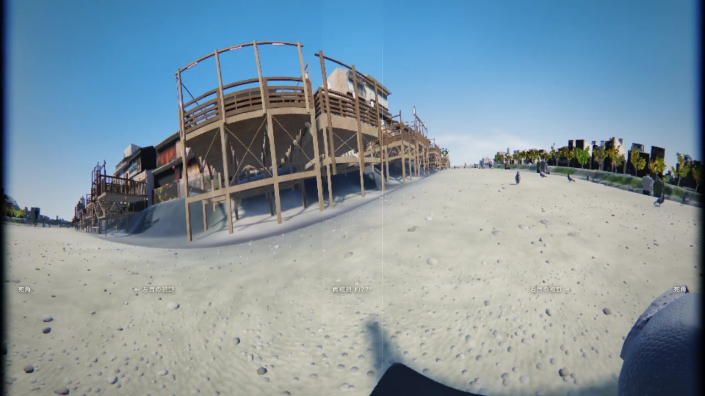
ハトの目は頭の横についています。見える範囲は左右あわせて約 320°。両目で同時に見えるのは正面の狭い帯だけで、最大でも 27° ほどです。真後ろの約 40° だけが死角になります。
この作品は、その視野を地面から 20 cm の高さで描きました。歩くと景色が止まっては進みます。頭を空間に止めてから前へ送る、あの首振りがそのまま画面に出るからです。
建物は、国土交通省の 3D 都市モデル PLATEAU（京都市・2025 年度）の LOD3 です。壁には測量のときに撮影された写真が貼られていて、作品ではそれをそのまま使っています。
舞台は実測で選びました。LOD3 の建物がある市区の壁の細かさを測ると、先斗町と祇園白川は壁 1 m あたり中央値で約 86 画素。比較した東京・虎ノ門周辺の約 17 倍でした。ハトの目線では壁まで 1〜2 m しかないので、この細かさが街の見え方を決めます。
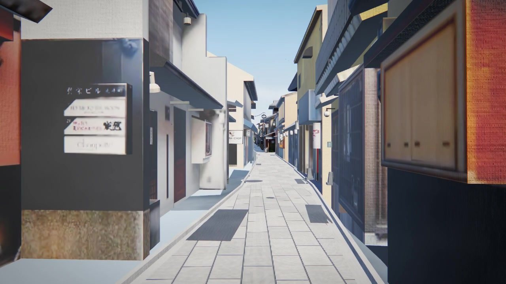
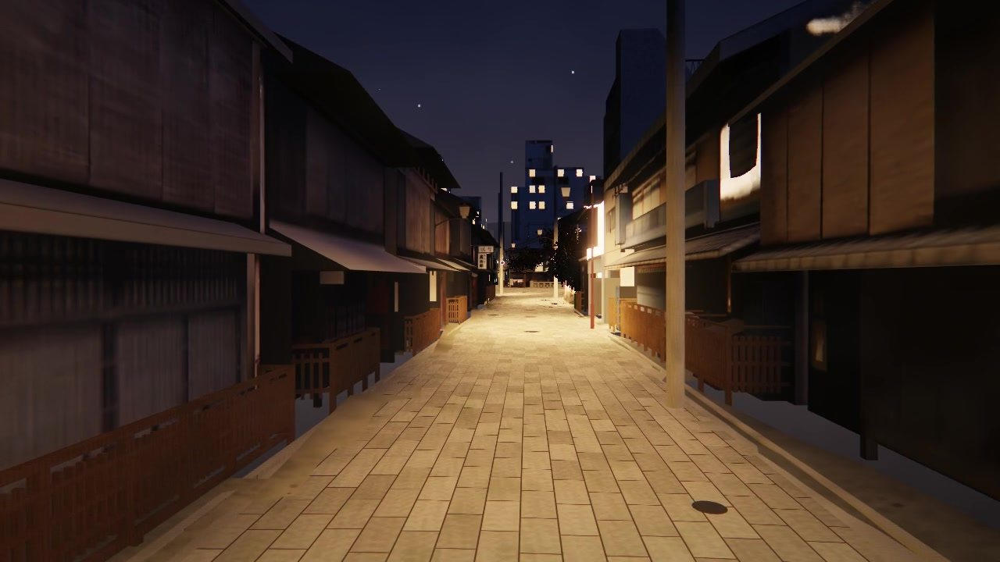
ハトは 1 羽ずつが空腹と渇きを持ち、時刻と周りの動きから次の行動を決めます。朝と夕方は食べることに集中し、正午には 3〜4 割が高い場所で休み、日が沈めば橋脚や屋根の縁のねぐらへ帰ります。
人が近づけば歩いて道を空け、トビが真上を通れば一斉に飛び立ちます。飛び立ちは近いハトから順に広がるので、波が群れを渡るように見えます。
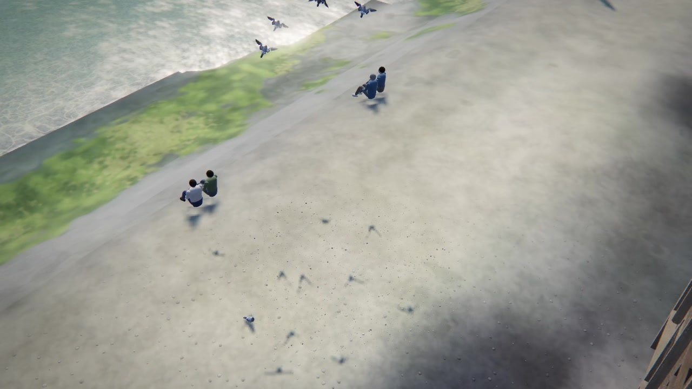
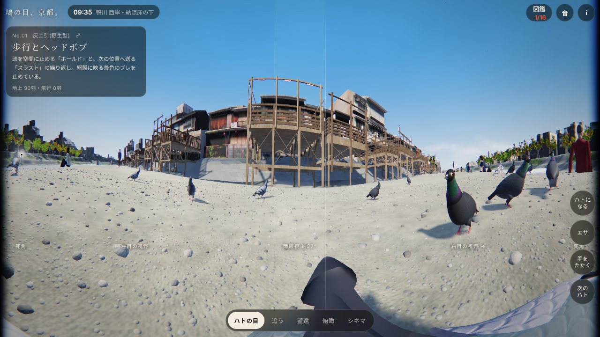
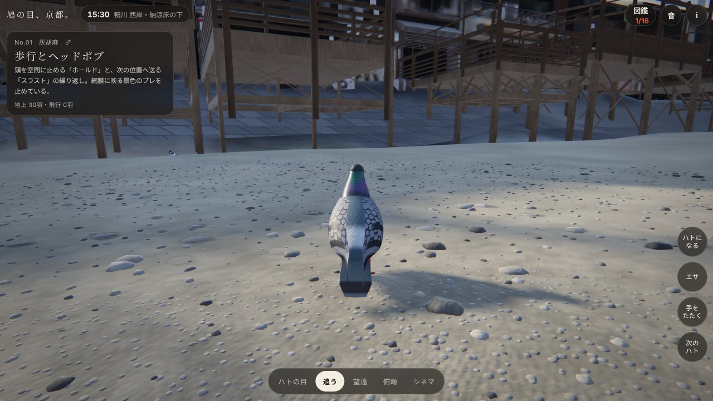
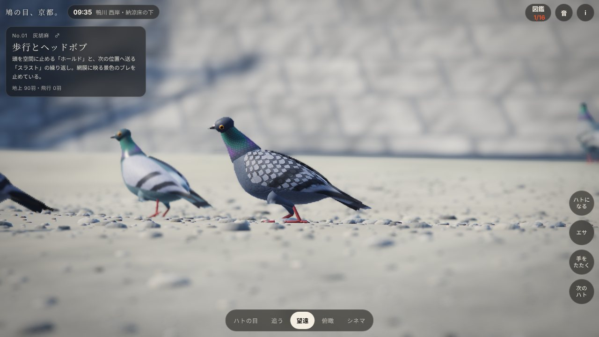
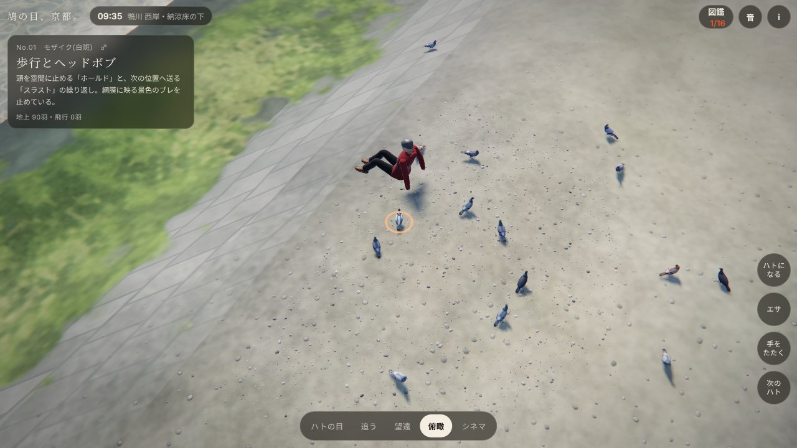
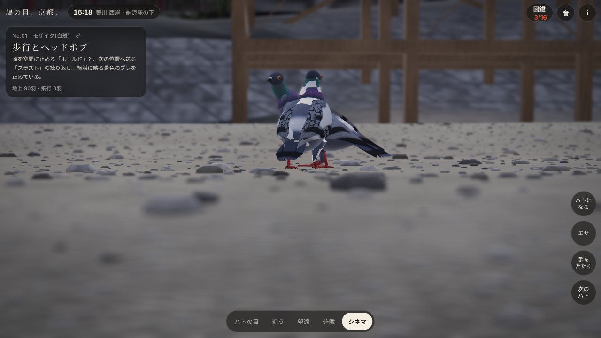
PLATEAU の 3D Tiles 約 1 GB を、6 段の変換で約 54 MB の実行時データに作り直しました。開いたときに読み込むのは約 21 MB です。残りは背景で読み込み、細かい写真は近づいた場所から順に読みます。使っているライブラリは three.js だけです。
その場所だと分かるものは、測量データと写真をそのまま使いました。時間で変わるもの、近づくと粗くなるもの、データに無いものはコードで描いています。水、空、石畳、足元の小石、人、車、そして音も、ブラウザの中で生成しています。
実装と検証は AI（Claude Fable 5.2）が行いました。コード、変換パイプライン、検証の道具、制作の記録はすべて公開しています。
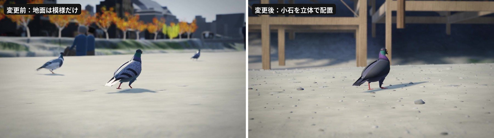
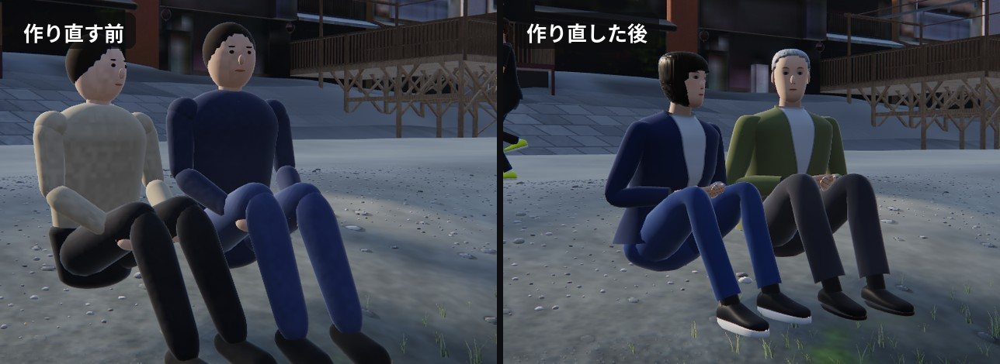
観察したドバト（カワラバト）の行動が記録されます。
京都・先斗町〜鴨川〜祇園白川の実在の街並みを、ドバトの群れと一緒に観察するシミュレーションです。
ハトの目：顔の横についた左右の目で見える約320°を1枚に展開。中央の狭い帯（最大約27°）だけが両眼視で、真後ろの約40°が死角です。歩くと景色が「止まる→進む」を繰り返すのは、頭を空間に固定するヘッドボブの再現です。
追う／望遠／俯瞰：ドラッグで回り込み、ピンチ（ホイール）で距離。シネマは自動カメラです。
地面をタップでエサをまく／ハトをタップで観察対象を変更／「手をたたく」で一斉飛翔／「ハトになる」で操縦（PC：WASD・Space・E）。左上の時刻から時間帯・天気・画質を変更できます。キーボード：1〜5 視点、N 次のハト、F エサ、C 手をたたく、H 表示切替。
建物・道路・都市設備：国土交通省 Project PLATEAU 3D都市モデル（京都市 2025年度、建築物 LOD3／LOD2・道路 LOD3・都市設備 LOD3・植生 LOD3）。壁面は同データの実写テクスチャです。
地形・水面範囲：国土地理院 地理院タイル（標高タイル DEM1A・DEM5A・DEM10B）。地表の写真：地理院タイル（シームレス空中写真）を加工して使用。遠景の地表は同タイルのズームレベル12で、データソースは Landsat8画像（GSI,TSIC,GEO Grid/AIST）、Landsat8画像（courtesy of the U.S. Geological Survey）、海底地形（GEBCO）です。砂利・石・草の細部はコードによる生成です。
ハト、樹木、鴨川の橋、水面、空、音、そして人と車はすべてコードによる手続き生成です（樹木の位置は PLATEAU の植生データと空中写真、橋の位置は空中写真から）。人は一人ずつ体格・服装・髪型の違う立体をコードで作り、13本の骨で動かしています（顔や指は簡略です）。鴨川名物の「等間隔に座る人たち」、歩く人、走る人、立ち止まる人に加えて、祇園と先斗町には着物姿の人もいます。川端通と四条通の路面は空中写真では車や木がにじむため、アスファルトと車線をコードで描いています。歩行者が近づくとハトは道を空け、走ってくると飛び立ちます。季節は、鴨川の納涼床（例年5月1日〜10月15日）が出ている最後の週にあたる10月中旬に設定しています。桜の葉が色づき始める頃で、太陽の高さと日の出・日の入りもこの時期に合わせています。上空を舞うトビ、行動の頻度、羽色の比率は演出を含みます。ハトの行動は実際のドバトの生態（採餌の時間帯、ねぐら、求愛、水の飲み方など）をもとにモデル化していますが、個体数や行動頻度は観察しやすいよう調整しています。
本作品は上記データを加工して作成したもので、国土交通省・国土地理院・京都市が内容を保証するものではありません。
コードとデータ変換の手順：github.com/kai-kou/hato-no-me-kyoto
PLATEAU 3D都市モデルを読み込んでいます（約21MB）
先斗町・鴨川・祇園白川